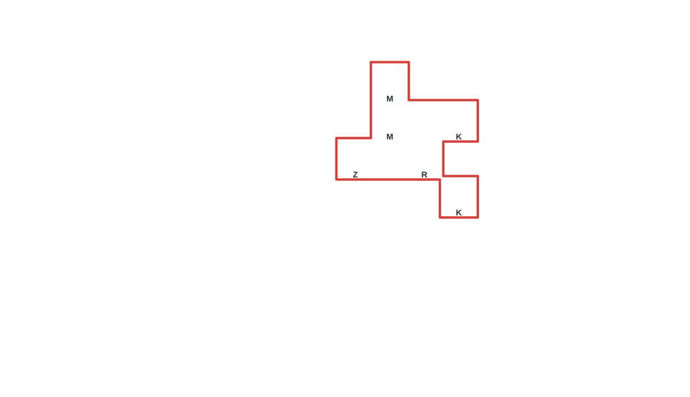

Lektion 01
Was ist eine Dur-Pentatonik?
Eine Pentatonik ist eine Tonleiter mit fünf verschiedenen Tönen pro Oktave. Die C-Dur-Pentatonik enthält die Tonstufen 1, 2, 3, 5 und 6 der C-Dur-Tonleiter: C, D, E, G und A.
Auf der Gitarre findest du diese fünf Töne in fünf über das Griffbrett verteilten Positionen. In diesem Kapitel betrachten wir die Positionen ausgehend von C-Dur.
Die Tonstufen 4 und 7 fehlen in der Dur-Pentatonik. In Kapitel 02 ergänzen wir sie und machen aus der Pentatonik die vollständige Dur-Tonleiter.
Lektion 02
Die erste Dur-Pentatonikposition über eine Oktave.
Hier lernst du die erste Position der Dur-Pentatonik kennen. Das Muster ist in jeder Tonart gleich; nur der Bund, in dem wir starten, ändert sich. Als Beispiel verwenden wir die C-Dur-Pentatonik – zunächst nur über eine Oktave. Sie heißt Dur-Position 1, weil wir ihren Grundton C als Dur-1 auf der tiefen E-Saite spielen. In dieser Form ist die Grundtondichte am höchsten. Außerdem können wir hier den Dur-Grundakkord mit seinem Grundton auf der tiefen E-Saite greifen.
Die Gründe und die Nummerierung der fünf Positionen schauen wir uns in späteren Lektionen genauer an. Konzentriere dich jetzt darauf, das Muster kennenzulernen, es sicher zu greifen und auf dem Griffbrett zu erkennen, wo der Grundton C liegt.
Vorbereitung: Arbeite vor der Pentatonik zuerst den Kurs Mechanische Grundlagen durch. Wenn du die Greifprinzipien und die Spinne kennst, kannst du die Fingersätze der Pentatonik viel leichter umsetzen.

So greifst du die Position
Jeder Finger bekommt einen Bund und behält diesen Bund bei; beim Spielen wechselt er nur die Saite. Die Buchstaben bedeuten: Z = Zeigefinger, M = Mittelfinger, R = Ringfinger und K = kleiner Finger. In dieser Form spielt der Mittelfinger das erste C auf der tiefen E-Saite. Von dort verteilen sich die übrigen Töne entsprechend: D mit K, E mit Z, G mit K, A mit Z und das obere C mit K.
Achte auf eine entspannte Hand: Verwende nur so viel Spannung wie nötig und nur dort, wo sie gebraucht wird. Stell dir vor, du hältst eine kleine Traube zwischen Handfläche und Gitarrenhals, ohne sie zu zerdrücken. Der Daumen liegt als leichter Anker hinten am Hals. Nirgends sonst soll unnötige Spannung entstehen.
Lektion 03
Das Muster wiederfinden
Das Oktavmuster taucht auch in anderen Positionen der Dur-Pentatonik auf – manchmal gleich, manchmal leicht verändert. Suche dabei jedes Mal das C als Bezugspunkt.

Dasselbe Oktavmuster taucht auch auf der A-Saite auf: Dort liegt es in Dur-Position 4. Der Start auf der tiefen E-Saite zeigt Dur-Position 1.
Lektion 04
Variationen des Musters.
Das Muster erscheint auf weiteren Saiten leicht verschoben: Zwischen G- und B-Saite liegt eine große Terz statt einer Quarte. Sobald wir die B-Saite einbeziehen, verändert sich deshalb der Griffweg.

Die Tonabstände des Musters bleiben gleich; durch die Stimmung der B-Saite verschiebt sich nur der Griffweg. Schau dir die Muster an, verstehe die gleichen Abstände, greife, spiele und singe sie. Geh erst weiter, wenn dir klar ist: Es ist dasselbe Muster, nur durch die Stimmung der B-Saite verschoben. Diese Stimmung ermöglicht viele Akkordgriffe, die wir regelmäßig verwenden. Warum die Verschiebung entsteht ↗
Die Verschiebung durch die B-Saite setzt sich in diesem Griffweg fort. Die Tonabstände bleiben gleich. Hier bietet es sich an, das C auf der G-Saite im fünften Bund mit dem Zeigefinger zu greifen. Der Fingersatz lautet dann Z–R–Z–K–Z–K. Schau dir das Muster an, verstehe es, greife, spiele und singe es. Geh erst weiter, wenn du hörst und siehst, dass es dieselbe Tonfolge mit angepasster Lage und Fingersatz ist. Warum die Verschiebung entsteht ↗
Lektion 05
Dur Position 3 und 5, ein neuer Griffweg
Vielleicht hast du schon bemerkt: Auch in Dur-Position 5 lässt sich eine Oktave der Pentatonik spielen, aber mit einem anderen Fingersatz. Position 5 entsteht an den Rändern von Position 4 und 1. Die Positionen greifen wie Legosteine ineinander.
In der vorigen Lektion hast du durch die ergänzten Töne vielleicht schon die zweite Oktave von Dur-Position 1 entdeckt. Mit dem neuen Knopf kannst du sie rot umrahmen und den Fingersatz einblenden.


Lektion 06
Griffwege auffüllen.
Die Lage ist der horizontale Bereich am Gitarrenhals. Für längere Melodien wechseln wir manchmal durch zwei oder mehrere Dur-Pentatonikpositionen. Beginne auf C im fünften Bund der G-Saite in Dur-Position 4 und spiele aufwärts. Für den Abschluss auf C wechselst du in Dur-Position 5 und greifst das C im achten Bund der hohen E-Saite mit dem kleinen Finger.

In Standardstimmung liegt D auf der B-Saite im dritten Bund und G auf der hohen E-Saite im dritten Bund. Das Ziel-C im achten Bund der hohen E-Saite liegt in Dur-Position 5.
Lektion 07
Ab dem 12. Bund wiederholt sich das Griffbrett.
Am 12. Bund erklingt auf jeder Saite derselbe Notenname wie bei der leeren Saite, eine Oktave höher. Deshalb wiederholen sich Notenfolge und Griffmuster ab dort. Die vier Muster und Ergänzungen aus Lektion 06 siehst du hier direkt. Der gelernte Griffweg der tiefen Dur-Position 3 ist rot markiert.
Mit dem Knopf ergänzt du Dur-Position 3. Sie nutzt die Wiederholung ab dem 12. Bund. Achte auf den Fingersatz und darauf, wie die bekannte Form in der höheren Lage wieder auftaucht.


Lektion 08
Der Grundakkord in der Pentatonik
Wie die fünf Positionen benannt werden
Wenn du ein Lied in Dur spielst oder in Dur denkst, suchst du den Dur-Grundton auf der tiefen E-Saite. Die Position mit dieser Dur-1 heißt Dur-Position 1. Die nächste Position rechts in Richtung höherer Bünde heißt 2, dann folgen 3, 4 und 5. In C-Dur suchst du also die C-Töne auf der tiefen E-Saite. Jede der fünf Formen enthält C an einer anderen Stelle; daran kannst du den Bezugspunkt erkennen und die Position benennen.
Hier siehst du dieselben fünf C-Dur-Pentatonik-Positionen auf dem ganzen Griffbrett. Jede Note hat auf allen Darstellungen dieselbe feste Farbe: C ist rot, E grün und G blau. Wir zeigen hier einige der gängigsten Akkordgriffe. Es gibt aber noch viele weitere Griffkombinationen, mit denen sich dieselben Akkorde spielen lassen. Mit „Dur-Grundakkord anzeigen“ werden zwei Akkordprototypen markiert: die E-Dur-Form als Barreakkord in Position 1 ab Bund 8 und die D-Form zwischen Position 2 und 3. Ihr Dreieck liegt auf G-Saite Bund 12, B-Saite Bund 13 und hoher E-Saite Bund 12. Die nächste Form verbindet A-Saite Bund 15, D-Saite Bund 14 und G-Saite Bund 12. Die A-Form verbindet A3, D5, G5 und B5. Die offene C-Form verbindet A3, D2, G0, B1 und e0.

Lektion 09
Die Pentatonik als Tonstufen lesen.
In Lektion 08 hast du die C-Dur-Pentatonik mit ihren Tönen und dem Grundakkord betrachtet. Jetzt verfeinerst du diese Ansicht: Statt der Notennamen zeigt das Griffbrett die Tonstufen. Wir bleiben bei C als Bezugston.
C-Dur-Pentatonik: Töne und Tonstufen
C = 1 · D = 2 · E = 3 · G = 5 · A = 6
Diese fünf Zahlen beschriften alle Töne der C-Dur-Pentatonik. Auch C in einer höheren Oktave bleibt hier die 1. Die Zahlen helfen dir, die Tonleiter auf dem Griffbrett wiederzuerkennen, ohne jeden Notennamen einzeln zu lesen.
Wechsle mit dem Knopf zwischen Zahlen und Notennamen. Die Positionen, Farben, Saiten und Bundnummern bleiben gleich. Du kannst außerdem das Griffbrett drehen und den C-Dur-Grundakkord einblenden.

Lektion 10 · Fazit
Was du über die Dur-Pentatonik gelernt hast.
Du kannst die fünf Positionen der C-Dur-Pentatonik auf dem Griffbrett finden und die Dur-Grundtöne C darin als Bezugspunkt verwenden. Die Pentatonik besteht aus den Tonstufen 1, 2, 3, 5 und 6; die 4 und 7 ergänzen wir im nächsten Kapitel zur vollständigen Dur-Tonleiter.
Die wichtigsten Verbindungen
C-Dur-Pentatonik: C · D · E · G · A = 1 · 2 · 3 · 5 · 6
C-Dur-Grundakkord: C · E · G = 1 · 3 · 5
Der Dur-Grundakkord besteht allgemein aus den Tonstufen 1, 3 und 5 der Durtonleiter: vom Grundton zur großen Terz und zur reinen Quinte.
Was du dir einprägen solltest
- Wo die fünf Dur-Pentatonik-Positionen auf dem Griffbrett liegen und wie sie ineinandergreifen.
- Wo der Grundton C in jeder Position sitzt.
- Wo die Akkordtöne 1, 3 und 5 innerhalb jeder Position liegen.
Geh die Positionen langsam durch und benenne zuerst die Form, dann den Grundton und schließlich die Akkordtöne. In Kapitel 02 ergänzt du anschließend die fehlenden Stufen der C-Dur-Tonleiter.